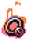

- Accessories -
Accessories are equippable items that can provide defense, extra damage and/or special abilities, such as limited flight. Up to five accessories may be equipped at any time; furthermore, up to five accessories may be placed in vanity slots, which will show the items on the player (if possible) but will not apply any of their effects.
Content List:
Weapon
Armor
 OFFENSIVE
OFFENSIVE
Dark Sun Ring
The Dark Sun Ring is a craftable post-Moon Lord accessory. When equipped, it provides +0.5 life regen, 10 defense, a 12% increase to damage, +2 extra minion slots, and +120% minion knockback. During the day, it provides an additional +2 life regen for a total of +2.5. During the night, it instead provides an extra 20 defense for a total of 30 defense. During a Solar Eclipse, it provides +1 life regen for a total of +1.5, and an extra 10 defense for a total of 20 defense.
Eldritch Soul Artifact
The Eldritch Soul Artifact is a craftable post-Moon Lord accessory. When equipped, it reduces mana cost by 25%, increases the velocity of ranged projectiles by 25%, increases max minions by 1, increases melee speed by 10%, and increases rogue stealth regeneration by 15%. It also grants immunity to the Whispering Death debuff.
Elemental Gauntlet
The Elemental Gauntlet is a craftable post-Moon Lord accessory that is the final upgrade to the Titan Glove and Feral Claws. It provides a 15% increase to melee speed and damage and a 5% increase to melee critical strike chance, a 20% increase to true melee damage, and increases melee knockback. Any enemy struck by a melee attack are inflicted with the Elemental Mix debuff.
 Yharim's Gift
Yharim's Gift
The Yharim's Gift is a post-Moon Lord accessory that is dropped by Yharon, Dragon of Rebirth. When equipped, it gives the player 30 defense and increases movement speed and all damage by 15%. The player also occasionally leaves behind exploding dragon dust while moving. The exploding dragon dust deals 175 damage every frame, lasts for roughly 1 second, and inflicts Dragonfire for 2 seconds on hit. When invincibility is active (i.e. when the player is damaged, enters the world or uses the Magic Mirror), flaming meteors will fall from the sky. The meteors have a base damage of 375.
DEFENSIVE
Asgardian Aegis
The Asgardian Aegis is a craftable post-Moon Lord accessory with a wide array of defensive effects.
It grants 20 defense, immunity to knockback and the majority of debuffs, including God Slayer Inferno.
While equipped, the wearer can double tap a horizontal movement key to perform a supreme cosmic inferno dash with a base distance of 28 blocks.
Striking enemies during the shield dash will heavily damage them, inflict God Slayer
Inferno, and spawn god slayer explosions on top of them. Every time an enemy is struck,
the wearer is given 12 immunity frames.
Infected Jewel
The Infected Jewel is a craftable Hardmode accessory which is the direct upgrade of the Crown Jewel. It grants 6 defense and 2 life regen. While any debuffs are active, the player's defense and life regen will increase by an additional 16 and 4 respectively (for a total of 22 defense and 6 life regen), and minimum natural life regen will be raised. If the player has multiple debuffs, each additional one grants 5 defense. As the player loses debuffs, the defense granted by debuffs will gradually decrease at a rate of one defense per second. Additionally, it negates the effects of the Astral Infection debuff, while still counting towards being debuffed.
The Absorber
The Absorber is a craftable Hardmode accessory. When equipped, it grants the effects of all its component accessories, along with the added effect of healing the player for 5% of the damage from incoming attacks and grants the player immunity to knockback. When consuming Healing Potions, the player will summon a green aura which lingers for 30 seconds. Entering the aura spawned by The Absorber will grant players +6 life regen, 8% increased damage, and 5% increased damage reduction for 10 seconds, along with cleansing all debuffs and defense damage. The Absorber Affliction debuff reduces enemy damage reduction by 20% and deals 200 damage to enemies per second.
The Sponge
The Sponge is a craftable post-Moon Lord accessory which is the direct upgrade of the Rover Drive. After nine seconds of
equipping the item without taking damage, a barrier covers its user, which grants 30 defense and 10% damage reduction. As the barrier is formed, it builds up to 180 shield
durability at a rate of 30 durability per second. Durability depletes instead of health as the player takes damage equal to the amount of damage taken. Once all 180 shield
durability is depleted, the barrier breaks and all effects are taken away.
Durability regenerates the same way as it is formed, requiring the player to not take damage for nine seconds, causing it to regenerate at a rate of 30 durability per second.
It can regenerate if the shield is partially or fully damaged, but will immediately be interrupted as the player takes damage.
 Draedon's Heart
Draedon's Heart
Draedon's Heart is a post-Moon Lord accessory that is dropped by the Exo Mechs. When equipped, it grants 48 defense, reduces incoming contact damage by 15%, and adds a Nanomachines meter, replacing the Adrenaline Meter in Revengeance Mode or higher. The Nanomachines meter will gradually charge over time during boss encounters, taking 30 seconds to fill up. When the meter is full, it can be activated, which will cause the player to heal for 360 HP over two seconds and gain a massive boost to their damage reduction. Getting hit while the meter is charging will not deplete the meter but will cause it to stop charging for 1 second.
 Triactis' True Paladinian Mage-Hammer of Might
Triactis' True Paladinian Mage-Hammer of Might Auric Tesla
Auric Tesla